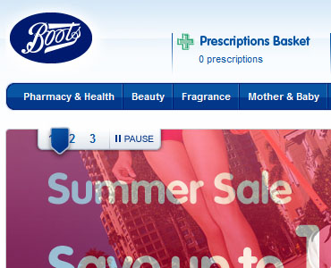
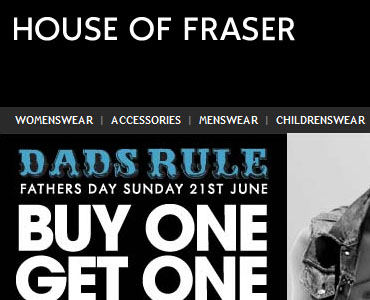
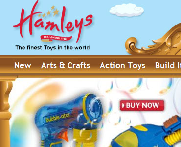
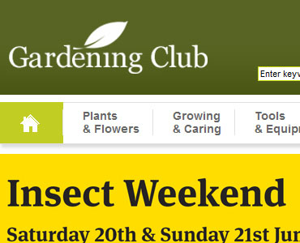

Adam Silver - Web Interface Developer, London, England, UK
About
My name is Adam Silver and I am a web interface developer.
I specialise in creating accessible, rich internet, web applications.
My specialist skills are (X)HTML, CSS, Object-Oriented JavaScript, AJAX, Accessibility,
search-engine optimisation and cross-browser compatibility. I have a strong passion for
building websites the right way.
Here's to a better web.
Work
- 
- 
- 
- 
Contact
Country: England
Email: adambsilver@gmail.com
Telephone: +44 (0) 7713 490 316
Skype: adambsilver
LinkedIn: adambsilver / www.linkedin.com/adambsilver